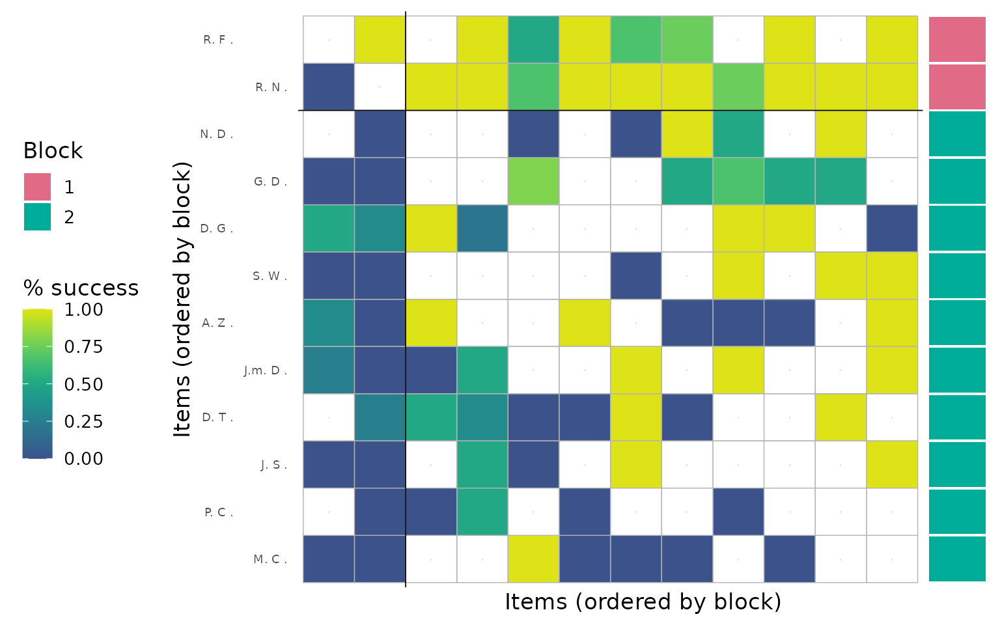
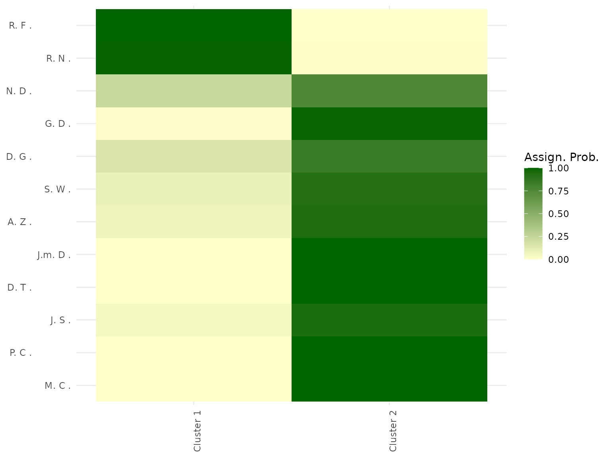
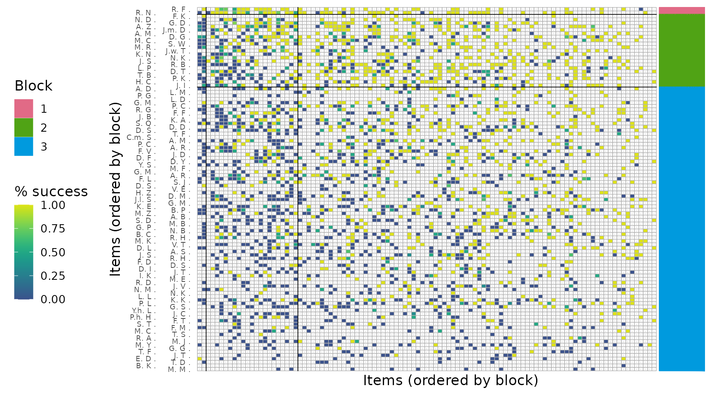
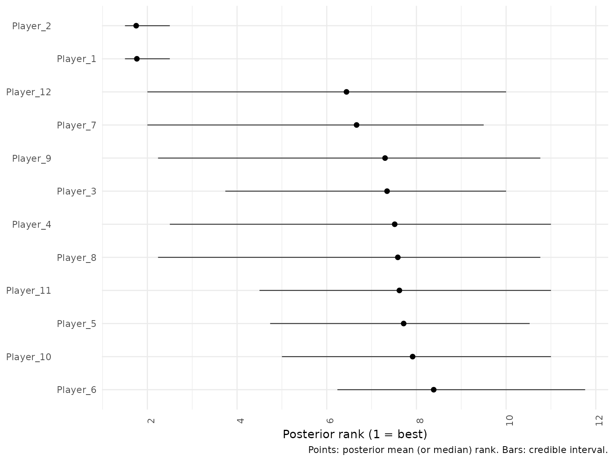

This vignette shows a lightweight workflow for fitting a Bradley-Terry stochastic block model and producing core summaries.
Data
w_ij <- ATP_2000_2025$`2017`$Y_ij[1:12, 1:12]
diag(w_ij) <- 0L
w_ij[1:3, 1:3]
#> Nadal R. Federer R. Dimitrov G.
#> Nadal R. 0 0 3
#> Federer R. 4 0 1
#> Dimitrov G. 0 0 0Fit
fit <- gibbs_bt_sbm(
w_ij = w_ij,
a = 2,
prior = "GN",
gamma_GN = 0.8,
T_iter = 200,
T_burn = 100,
verbose = FALSE
)Relabel and Summarise
post <- relabel_by_lambda(fit$x_samples, fit$lambda_samples)
pretty_table_K_distribution(post)| 2 | 3 |
|---|---|
| 0.62 | 0.32 |
Core Plots
plot_block_adjacency(fit = post, w_ij = w_ij)
plot_assignment_probabilities(fit = post, w_ij = w_ij, x_hat = post$minVI_partition)
plot_lambda_uncertainty(fit = post, w_ij = w_ij, x_hat = post$minVI_partition)
plot_rank_intervals(post, max_players = 12)